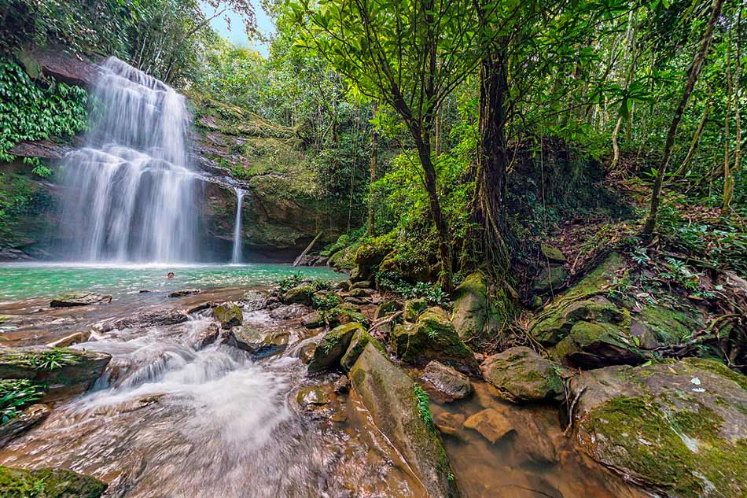

CAQUETA
REGION: amazonia
2. CATEDRA NUESTRA SEÑORA DE LOURDES
3. POSADA DE ANDAKIES
4.RESERVA NAUTURAL ECOTURISTICA LAS DALIAS
5. MUSEO CAQUETA
RESERVA NATURAL DEL DANUBIO
Está ubicada sobre la cordillera Oriental, en la Cuenca del Rio Bodoquero. Cuenta con tres senderos ecológicos que permite al turista disfrutar de un momento de placer con los abundantes y exóticos recursos de flora y fauna. La Lista de atractivos que se pueden experimentar en la reserva es bastante larga, Los turistas que quieran practicar Senderismo lo pueden hacer en las cascadas Los helechos o Murui Muinane o enamorarse de la imponente cascada Mo Buinaima, que tiene una altura aproximada de 20 metros.
CATEDRA NUESTRA SEÑORA DE LOURDES
La Catedral Metropolitana Nuestra Señora de Lourdes es una iglesia catedralicia colombiana de culto católico consagrada a la Virgen María bajo la advocación de Nuestra Señora de Lourdes. Se localiza en el costado occidental de la Plaza San Francisco de Asís del municipio colombiano de Florencia, capital del departamento del Caquetá. La catedral es el principal templo de la Arquidiócesis de Florencia.1
POSADA DE ANDAKIES
A 10 Km del municipio de Belén de los Andaquíes, vía los Angeles, se encuentra la Reserva Natural POSADA DE LOS ANDAKIES. Esta Reserva Natural es el espacio ideal para el contacto con la naturaleza, la observación de aves, la recreación y la investigación científica. Camina los senderos en medio del bosque para descubrir la magia de saltos y cascadas de aguas frescas y cristalinas.
RESERVA NAUTURAL ECOTURISTICA LAS DALIAS
se trata de una Reserva Natural de aproximadamente de 80 hectáreas, de las cuales el 80% se encuentran como zona de conservación. Se destacan atractivos naturales como: Las quebradas "Agua Bonita y La Cajona" por donde se encuentran además dos (2) cárcavas o cuevas, un (1) cañón natural formado de rocas de 2 Kilómetros de longitud y senderos para la interpretación ambiental, avistamiento de aves, mamíferos, mariposas, murciélagos y flores silvestres; se puede practicar recorridos por la rivera de las quebradas y adelantar actividades de investigación, agroturismo, entre otros.
MUSEO CAQUETA
El Museo Caquetá se concibe como un aporte a la recuperación de memoria histórica del Caquetá.



GASTRONOMIA
2. COPOAZU
3. SANCOCHO DE GALLINA